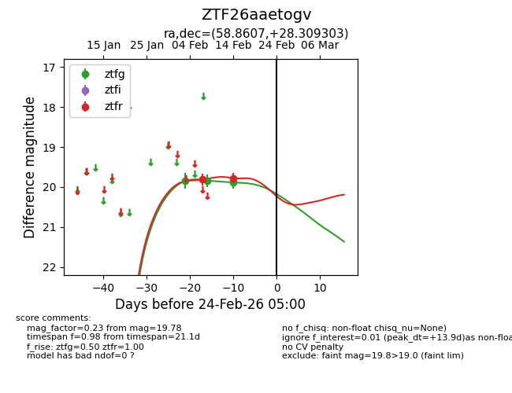
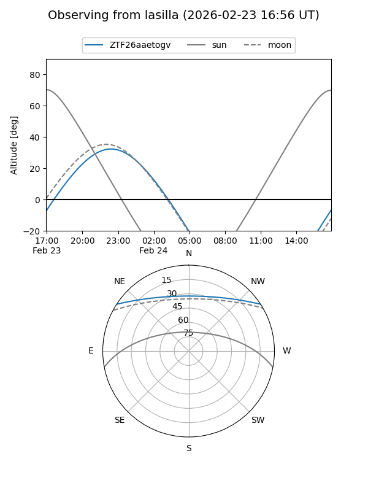
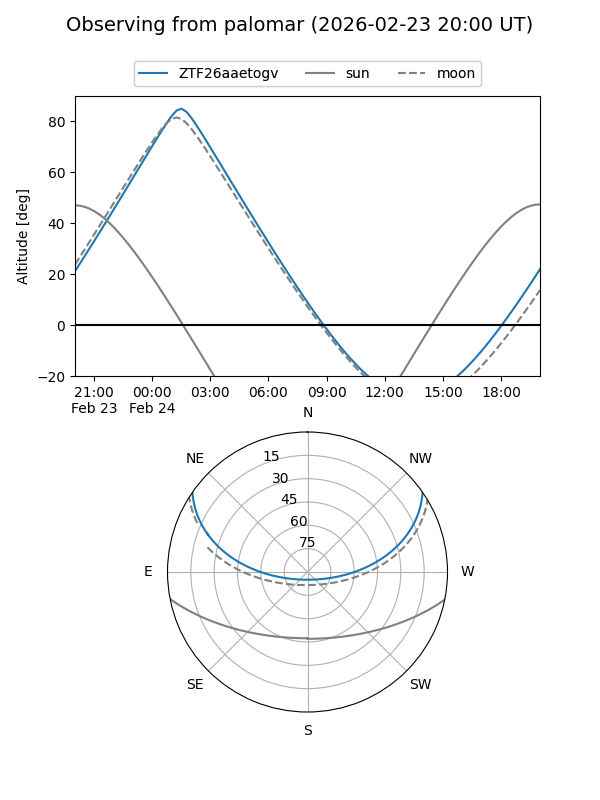

ZTF26aaetogv
Target ZTF26aaetogv at 2026-02-24 09:08
Aliases and brokers:
FINK: link
Lasair: link
ALeRCE: link
alt names
ZTF26aaetogv (ztf,fink_ztf)
Coordinates:
equatorial (ra, dec) = 58.8607,+28.30930
equatorial (HMS+DMS) = 03:55:26.56,+28:18:33.49
galactic (l, b) = (165.0313,-19.15005)
Flags:
Photometry:
last ztfg=19.88, ztfr=19.78
3 ztfg, 2 ztfr detections
Lightcurve

Visibility


Additional plots